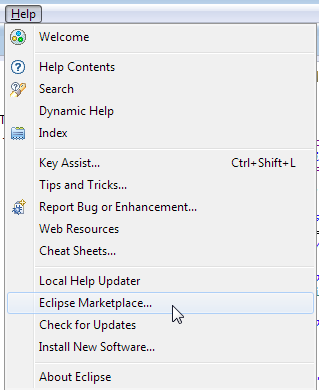
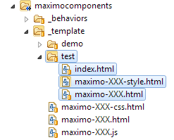

<!-- 
 @license
 Licensed Materials - Property of IBM
 5724-U18
 Copyright IBM Corporation. 2016
-->
<link rel="import" href="../components/polymer/polymer.html" />

<style>
	maximo-datalist li div {
	    white-space: normal !important;
	}
	
	code {
		font-family: monospace;
		font-size: 12px;
	}
	
	.pre {
	    background: #E7E7E7;
    	display: inline-block;
    	padding: 0px 10px 10px 0px;
	}
	
</style>


<dom-module id="workscape-info">

	<template id="template">

	<style>
	    h2 {
	      text-transform: capitalize;
	    }
	    .iconcontainer iron-icon {
	      transition: all 0.2s;
	      -webkit-transition: all 0.2s;
	    }
	    .iconcontainer:hover iron-icon:not[.top] {
	      width: 75px;
	      height: 75px;
	    }
	    
	    a {
	    	color: #4178be;
	    	cursor: pointer; 
	    }
	    
	    a:hover {
	    	color: #5aaafa;
	    	cursor: pointer;
	    }
	    
	    iron-icon.top {
	    	float: right;
	    	width: 16px;
	    	height: 16px;
	    }
	    
	    iron-icon.top ::content svg {
	    	fill: var(--Primary-blue50);
	    }
	    
	    .set {
	      margin: auto;
	      padding: 1em 0;
	      border-bottom: 1px solid silver;
	      @apply(--layout-horizontal);
	      @apply(--layout-wrap);
	    }
		.fontSize {
			font-size: 12px;
		}
	
		.fontSize > div {
			border: 1px solid #eee;
			margin:10px;
			display:inline-block;
			padding: 5px;
			vertical-align: top;
		}
	
		.fontSize .fontHolder td {
			border: 1px solid #eee;
		}
	
		.fontSize td {
			cursor: default;
		}
	
	
		.fontSize td.common {
			background: lightblue !important;
			color: #000;
		} 
	
		.fontSize td.current {
			background: #ccc;
			color: #000 !important;
			border-bottom: 1px solid #000 !important;
		} 
	
		.fontSize .fontHolder table {
			width: 100%;
			border-collapse: collapse;
		}
		.fontSize table {
			border-collapse: collapse;
		}
		.fontSize span, .fontSize label {
			display: block;
		}
		.fontSize label {
			border-bottom: 1px solid #eee;
			margin-bottom: 10px;
		}
		
		a.required:before {
			content: '*';
			color: orange;
			font-size: 20px;
		}

	</style>
	
		<maximo-workscape id="workscape" label="Reference / Information" >
			<table style="width: 60%">
				<tr>
					<td style="text-align: left;vertical-align: top;">
						<div id="building">
	  						<h4>Building Components</h4>
	  						<a id="component" event="#" on-tap="showDialog" title="Component Structure">Component Structure</a><br>
	  						When delivering a new component the following items are required before it can be considered complete: 
	  						<a id="docs" event="#" on-tap="showDialog" title="Documentation" class="required">Documentation</a><br>
	  						<a id="demo" event="#" on-tap="showDialog" title="Demo" class="required">Demo</a><br>
	  						<a id="unittest" event="#" on-tap="showDialog" title="Unit Test" class="required">Unit test</a><br>
	  					</div>
			  			<div id="practices">
			  				<h4>Information</h4>
			  				<a id="jsHint" event="#" on-tap="showDialog" title="jsHint">jsHint</a><br>
			  				<a id="quirks" event="#" on-tap="showDialog" title="Polymer Quirks">Polymer Quirks</a><br>
			  				<a id="layouts" on-tap="openLayouts">Flex Layouts</a><br>
			  			</div>
				  		<div id="design">
				  			<h4>Design Information</h4>
				  			<a id="palette" event="#" on-tap="showPaletteDialog" title="Color Palette">Color Palette</a><br>
				  			<a id="icons" on-tap="showDialog" title="Icons">Icons</a><br>
				  			<a id="docs" on-tap="openDocument" title="Documenting Components">Documentation...</a><br>
				  			<a id="fontsize" on-tap="showDialog" title="Fonts, Sizes and Conversions">Fonts, Sizes and Conversions</a><br>
				  		</div>
			  		</td>
			  		<td style="text-align: right;vertical-align: top;">
	  					<div id="list">
			  			</div>
			  		</td>
			  	</tr>
	  		</table>
		</maximo-workscape>
		
	<!-- begin popups -->
		<div id="information_jsHint_dialog" style="display:none" data-hideme="true">
			<p>
				We are using jsHint to help catch errors and enforce standard coding practices.
			</p>
			<h3>Installing and using</h3>
			<ol>
				<li>Install jsHint from Eclipse Marketplace<br>
					<ol type="A">
						<li>Eclipse 'Help - Eclipse Marketplace'</li>
							
						<li>Enter jshint and search. Then choose install. <br><small>(Accept license, etc... You will have to restart eclipse during this process)</small></li>
							
					</ol>
					
				</li>
			</ol>
			<h3>After install</h3>
			<ol>
				<li>Configure jsHint</li>
					
				<li>Files and Folders <br><small>Add the following to make jsHint only validate our files and avoid seeing errors in other code.<br>
					Make sure you add any new folders that require validation as they are created. (only needed if they are outside of what is defined here)
					</small></li>
					
				<li>Configuration <br><small>Make sure the configuration is using the file we have in our project. Notice the 'predef' section, this allows us to define more globally scoped variables and have jsHint not show errors for them. </small></li>
					
			</ol>
			<h3>Enforce Errors</h3>
			<ol>
				<li>Configure jsHint</li>
					
				<li>Enable jsHint Errors</li>
					
			</ol>
			<br><br><br>
			<p>
				After jsHint is configured you will see error/warning markers in the margins of your js files upon save. Please correct these prior to delivery. RTC will prevent delivery with errors, but allow with warnings.
				<br><small>NOTE: Ignore Camel Case warnings. We have been unable to turn them off due to a jsHint bug.</small>
			</p>
		</div>
		
		
		<div id="information_component_dialog" style="display:none" data-hideme="true">
			<p>
				We have developed some component structure practices which will help to ensure consistency across the project.
			</p>
			<h3>File Structure</h3>
			<p>
				Each component should contain 3 main files, a functional demo and a unit test. The html and js file for each component should be documented.
			</p>
			
			Ex: 
			<p>
				There is a _template folder within the component folders to help facilitate creation (shown in example). Any XXX should be replaced with your new component name (in file/folder names as well as file contents). <br><br>
				<small>A plugin is being developed to better assist with creation.</small> 
			</p>
		</div>
		
		<div id="information_icons_dialog" style="display:none" data-hideme="true">
		  <h3>It is now recommended that we only use the icons from the <a href="#Maximo">Maximo set</a>.<br>All icons must be created with consistent styling following a pre-defined set of guidelines so that they are re-usable within the platform. <br>Because of this, <span style="color: red">any new icons should be added by design team only!!!</span><br></h3>
		  <template is="dom-bind">
		   <iron-meta id="iconsetMeta" type="iconset" list="{{iconsets}}"></iron-meta>
		   	<a name="top"></a>
		   	<template is="dom-repeat" items="{{iconsets}}">
		   		<template is="dom-if" if="{{_showIconSet(item)}}">
		      		<span style="padding: 5px"><a href="#{{item.name}}">{{item.name}}</a></span>
		      	</template>
		    </template>
		    <template is="dom-repeat" items="{{iconsets}}">
		    	<template is="dom-if" if="{{_showIconSet(item)}}">
			      <h2><a name="{{item.name}}" href="#top">{{item.name}}<iron-icon class="top" icon="action-based:up-to-top"></iron-icon></a></h2>
			      <div class="set">
			        <template is="dom-repeat" items="{{getIconNames(item)}}">
			          <div class="iconcontainer" style="display: inline-block;text-align:center;margin: 1em;border:1px solid #999;width: 100px;max-width: 100px;vertical-align: top">
			            <iron-icon icon="{{item}}"></iron-icon><br>
			            <div style="font-size: 80%;;width: 100px;height: 35px" title="{{item}}">{{item}}</div>
			          </div>
			        </template>
			      </div>
				</template>
		    </template>
		  </template>
		</div>
		
		<div id="fonts_dialog" style="display:none" data-hideme="true">
		</div>
		
		<div id="information_palette_dialog" style="display:none;text-align: left" data-hideme="true">
			//leave blank so it can be filled later 
		</div>
		
		<div id="docs_dialog" style="display:none;text-align: left" data-hideme="true">
			<h1>How to - Documentation</h1>
			<h2>Why documentation is important</h2>
			<p>It's always important to have reliable documentation to guide your work. Most developers support multiple applications at the same time, which means that it is even more crucial to have documentation in place to help track all aspects of each application. Not just for developing, but it's also helpful for maintenance, and knowledge transfer.</p>
			<h2>Starting the process</h2>
			<p>Polymer documentation is based on javascript comments: In order to start writing components documentation, go to the file called maximo-XXX.js</p>
			<h3>Describing the component</h3>
			<p>Components summary and how it basically works can be done following the steps bellow:
			<ol>
				<li>Write the documentation as a JavaScript comment, immediately preceeding the Polymer() call:</li>
				<p>
  		<pre class="pre"><code>
/*
`&lt;maximo-footer&gt;` element. Behave as a simple footer div, which stay at the bottom of his parent component and can align the content.
 */
Polymer({
		</code></pre>
  				</p>
				<li>The summary starts with the element name and a briefly description of how it works:</li>
					<p>
  		<pre class="pre"><code>
`&lt;maximo-footer&gt;` element. Behave as a simple footer div, which stay...
		</code></pre>
					</p>
				<li>After the summary, show how the component should be called and what properties can be used.</li>
				
				<p>
  		<pre class="pre"><code>
Example:
```html
  &lt;maximo-footer id="footer" centered left&gt; &lt;/maximo-footer&gt;
```
		</code></pre>
				</p>
				<li>Use Markdown headings to break up long element summaries using the tag <strong><i>###XXX Header</i></strong>:</li>
				<p>
  		<pre class="pre"><code>
###Example Heading:
Describe the new section inside of this.
		</code></pre>
				</p>
			</ol> </p>
			<h3>Documenting the Properties</h3>
			<p> Document all public properties. Docs should start with a one line summary. Make sure that the property's type is annotated.</p>
			<p>For example, the most simple property documentation can be a single line:</p>
			<pre class="pre"><code>
properties : {
		/**
     * Centralize the content
    */
		centered: {
			type: Boolean,
			value: false
		},
		</code></pre>
			<h3>Documenting the Methods</h3>
			<p> Follow the property guidelines. Additionally, make sure the types for all params and return values are documented.</p>
			<p>For example, the most simple property documentation can be a single line:</p>
			<pre class="pre"><code>
/*
  	It calls a function, passing the event as a parameter.
  	*/
	onTap: function(e){
		if(this.event && !this.synchronous && !this.labelTap){
			if(this.asynchronous){
				$M.toggleWait(true);
			}
		}
	},
		</code></pre>
			<p>Or for more complex methods, describe each parameter/type using the tag <strong><i>@param</i></strong>:</p>
			<pre class="pre"><code>
/**
		 * Bind an event to this component and store so it can be removed later.
		 * @param {object} element object to bind to.
		 * @param {string} event Type of event for bind.
		 * @param {object} func Fuction to call when event triggers.
		 * @return {object} handler.
		 */
		bindEvent: function(element, event, func){
		</code></pre>
			<p></p>
<br><br>
For a good documentation example, you can click <a id="docsEx" on-tap="openDocExample" title="Documentation Example" style="cursor:pointer"><b>here</b></a>.<br>
<br><br>
	&emsp;More information: <a href="https://www.polymer-project.org/1.0/docs/tools/documentation">hhttps://www.polymer-project.org/1.0/docs/tools/documentation</a> Search for:  documentation<p>


		</div>
		
		<div id="information_demo_dialog" style="display:none;text-align: left" data-hideme="true">
			<h1>Component Demos</h1>

<h2>Demo contents</h2>
The tag should be add at the <b>end</b> of the element summary, as part of the same comment block. Two tags are supported currently in polymer:<br>
@hero and @demo<br><br>

@demo. Specifies a demo, with optional path and description. If path and description are omitted, the standard demo path (./demo/) is assumed.<br>
<pre class="pre"><code>
  @demo

  @demo path/to/demo1.html  Super cool demo!
  @demo path/to/demo2.html  Even cooler demo.
 
</code></pre>
<br>
<h3><i>For more information about 'how to use a tag', please look at the documentation section.</i></h3><br><br>

Inserting the @demo tag turns visible the button to demo.html, at the documentation screen.<br>
This is how the demo button look like:<br>
<br><br>


<h2>File Structure</h2>
Most of the components contains a demo folder:<br><br>
			<br><br>
			As with creating a new component, creating a demo for an existing component is simple.
			<ol>
				<li>Copy the demo folder from any old component into your existing new component folder.</li>
				<li>Rename maximo-XXX-demo.html - Replace XXX with your component name.</li>
				<li>Open all files and replace all occurrences of XXX with the component name.</li>
			</ol>
			<p>
				<br><br>
<h2>Consuming data in local environment</h2>
	<p>Instead of using an ajax request to get some demo data from maximo (generally used with maximo-collection), a different feature provided by the maximo-collection component called "test-url", can be used:</p>
	<p>
  		<pre class="pre">
  			<code>
	&lt;maximo-collection 
		auto="true"	
		id="collection" 
		collection-data="{{data}}"
		test-url="{{resolveUrl('data/demodata.json')}}"
		on-record-data-refreshed="_handleRecordDataRefreshed"&gt;
	&lt;/maximo-collection&gt;
  			</code>
  		</pre>
  	</p>
  	<p>To use that functionallity, add a data.json filled with the data that should be consumed inside the "data" folder.</p>
  	<br><br>

  	For a good documentation example, you can click <a id="docsEx" on-tap="openDocExample" title="Documentation Example" style="cursor:pointer"><b>here</b></a>.<br>

<br><br>

  	<br><br>
	&emsp;More information: <a href="https://www.polymer-project.org/1.0/docs/tools/documentation">hhttps://www.polymer-project.org/1.0/docs/tools/documentation</a> Search for:  @demo<p>


		</div>
		
		<div id="information_unittest_dialog" style="display:none;text-align: left" data-hideme="true">
			<h2>Component unit tests</h2>
			<h4>File Structure</h4>
			The _template folder for components contains a test folder:<br><br>
			<br><br>
			As with creating a new component, creating a unit test for an existing component is very easy.
			<ol>
				<li>Copy the test folder from the _template into an existing component folder.</li>
				<li>Rename maximo-XXX.html and maximo-XXX-style.html - Replace XXX with the component name.</li>
				<li>Open all files and replace all occurrences of XXX with the component name.</li>
			</ol>
			<p>You will now have a working unit test that will have a simple test suite for the component. This simple suite does not test anything specific until you fill in the content.<br> 
			The template also includes simple code to run A11y (Accesibility) audit of a pre-defined test fixture. To run your test, open your browser and navigate to the test file. <br>
			You will see the test output in your browser.<br> 
			Ex: <a href="http://localhost:7001/maximo-x/script/maximocomponents/maximo-checkbox/test/index.html" target="new">http://localhost:7001/maximo-x/script/maximocomponents/maximo-checkbox/test/index.htm l</a></p>
			<br><br>
			<h3>Unit tests contents</h3>
			<h4>Index.html - This is the file that is used via a browser to run your unit tests.</h4>
<pre class="pre"><code>
  &lt;body&gt;
    &lt;script&gt;
      WCT.loadSuites([
        'maximo-MYCOMPONENT.html'
      ]);
    &lt;/script&gt;
  &lt;/body&gt;
</code></pre>
<p>The WCT.loadSuites call instructs the test to run suites by pointing to other files within the same folder. The other file included with the template (maximo-MYCOMPONENT.html) should be renamed, replacing the MYCOMPONENT with your component name. Then open the file and replace all occurrences of MYCOMPONENT with our component name.</p>
<h4>maximo-XXX.html - This is the file that is used for your main unit tests.</h4>
<pre class="pre"><code>
  &lt;body&gt;
    &lt;maximo-module id="module"&gt;&lt;/maximo-module&gt;
    &lt;test-fixture id="MYCOMPONENT"&gt;
      &lt;template&gt;
        &lt;maximo-MYCOMPONENT id=""  label="" &gt;&lt;/maximo-MYCOMPONENT&gt;
    	&lt;/template&gt;
    &lt;/test-fixture&gt;
    &lt;script&gt;
      suite('&lt;maximo-MYCOMPONENT&gt;', function() {
          var MYCOMPONENT;
          setup(function() {
        	  MYCOMPONENT = fixture('MYCOMPONENT');
          });
          
          test('MYCOMPONENT base - checks states', function(done) {
        	  //MockInteractions.tap(MYCOMPONENT);
        	  //expect(MYCOMPONENT.hasAttribute('fakeattr')).to.equal(false, 'MYCOMPONENT should not have had fakeattr attribute');
              done();
          });
          
    	  a11ySuite('MYCOMPONENT');
      });
      
    &lt;/script&gt;
  &lt;/body&gt;
</code></pre>
	<p>The important parts of this file are: the test-fixture component, the suite, setup and test functions.<br>
	Test fixtures provide a way to define a component that will be reset to initial definition prior to any internal test run and prevent shared states. This is very helpful as you move through different tests so that you can always easily get back to the initial state and avoid confusion between tests. To access your defined fixtures, instantiate them in setup by calling var myFixture = fixture(fixtureId).</p>
	<p>The suite function is where you define your tests and any setup that is needed. The setup function is creating some variables for use by each test. This allows us to have one block of code for fetching re-usable test fixtures and not have the same code repeated within each test.</p>
	<p>Test takes two arguments: A string to log at runtime and 'done'. Calling test with the done argument tells Mocha to run it asynchronously. To allow this to work, the test must call 'done' when it completes. If 'done' is not called or it takes too long, the test eventually times out and fails.</p> 
	<p>The call to A11ySuite is used to run a series of accessibility tests against a fixture by providing the fixture id as an argument. This is helpful and gets us some benefit with very little effort, but we should still be building in accessibility tests within the suite to verify intended component functionality.</p>
	<h4>maximo-XXX-style.html - This is the file that is used for your main unit tests. It has the same structure as maximo-XXX.html.</h4>
	<p>Style testing is also easy to achieve. We are splitting style tests into another html test suite file so that we can easily distinguish them if we need to create new tests for additional UI styles or simply not run them.</p>

	<h4>Additional information</h4>

	<p>We have a test.js file located in the root script folder. This is for utility/helper functions that will be shared across tests.</p>
	
	<p>Please keep unit tests concise and only test the component for which the test is being written. If a component has external resource requirements, such as other components, they should be stubbed within the test to provide only the functionality used.<br><br>
	&emsp;More information: <a href="https://www.polymer-project.org/1.0/docs/tools/tests">https://www.polymer-project.org/1.0/docs/tools/tests</a> Search for:  Create stub elements<p>

	<p>Unit tests have been setup to provide Mocked interactions. To do this, one must only use the MockInteractions element like: MockInteractions.tap(someElement) - where someElement is an element.<br><br> 
	&emsp;More information: <a href="https://github.com/PolymerElements/iron-test-helpers#mock-interactions">https://github.com/PolymerElements/iron-test-helpers#mock-interactions</a></p>

	<p>Unit tests can be written in a few different formats:  Assert, Expect and Should. We have decided to use the Expect Assertion style for easier readability.<br><br>
	&emsp;More Information: <a href="http://chaijs.com/guide/styles/#differences">http://chaijs.com/guide/styles/#differences</a></p>
	
	</div>
		
		<div id="information_quirks_dialog" style="display:none" data-hideme="true">
			<h2>Use a name space on all components</h2>
			If you have a custom textbox component and want to call it textbox, prefix the name with a name space:<br>
			&lt;maximo&#45;textbox&gt;<br>
			<h2>Arrays as attributes</h2>
			When passing an array to a polymer compopnent use the following syntax:<br> 
				property='["wo"]'<br><br>
			<small>The outer quotes must be single and the inner must be double.</small><br>
			<br>
			This will fail: property="['wo']"
			<h2>Camel Case properties</h2>
			Do not use camel case properties on the outer component definition. The properties can be defined internally as camel case, but the external should be hyphenated.
			<br><br>
			Ex: 
			<pre class="pre">
				&lt;namespace-component my-attribute="something"/&gt;&lt;/namespace-component\&gt;
				<code>
				Polymer({
					is: 'namespace-component',
					properties: {
					 	myAttribute : { //camel case is okay here
					 		type: String,
					 		value: ''
					 	}
					}
				});
				</code>
			</pre>
			<h2>Using a Boolean property with true as default</h2>
			If you want to use a boolean property with true as the default you must set the property type to Object. Otherwise it will always be set to true as any value is true-ish in javascript.<br>
			Example :
			<pre class="pre">
				someproperty : {
					type: <strike style='color:red'><span style='color:#6d7777'>Boolean</span></strike> Object,
					value: true
				}
			</pre>
			To avoid this confusing pattern we should always use boolean properties with defaults as false. When these are used the presence of the property signifiesd true and the absence is false. 
			<h2>Problems with "dom-if" not re-evaluating</h2>
			<p>
			By default, a "dom-if" will not re-evaluate if it is set to true, so if the result you are using later resolves to false the "dom-if" will not then hide the content.  To override this, add 'restamp' as a property to the "dom-if" template.  There is a performance penalty for doing this. 
			<p> 
		</div>
			
		<div id="information_fontsize_dialog" style="display:none" class="fontSize" data-hideme="true">
			<div>
				<table>
					<tr>
						<th class="fontSelector">
						</th>
					</tr>
					<tr>
						<td id="holder" class="fontHolder">
						</td>
					</tr>
				</table>
			</div>
			<div class="fontExamples">
	  			<label class="currentFontSize"></label>
		  		<span style="font-family:HelveticaNeue-Light">Maximo Lightning - (HelveticaNeue-Light)</span>
		  		<span style="font-family:HelveticaNeue-Light-Italic">Maximo Lightning - (HelveticaNeue-Light-Italic)</span>
				<br>
				<span style="font-family:HelveticaNeue-Thin">Maximo Lightning - (HelveticaNeue-Thin)</span>
				<br>
		  		<span style="font-family:HelveticaNeue">Maximo Lightning - (HelveticaNeue)</span>
		  		<span style="font-family:HelveticaNeue-Italic">Maximo Lightning - (HelveticaNeue-Italic)</span>
		  		<br>
		  		<span style="font-family:HelveticaNeue-Medium">Maximo Lightning - (HelveticaNeue-Medium)</span>
		  		<span style="font-family:HelveticaNeue-Medium-Italic">Maximo Lightning - (HelveticaNeue-Medium-Italic)</span>
		  		<br>
		  		<span style="font-family:HelveticaNeue-Medium">Maximo Lightning - (HelveticaNeue-Medium)</span>
		  		<span style="font-family:'HelveticaNeue-Medium-Italic">Maximo Lightning - ('HelveticaNeue-Medium-Italic)</span>
				<br>
		  		<span style="font-family:HelveticaNeue-Bold">Maximo Lightning - (HelveticaNeue-Bold)</span>
		  		<span style="font-family:HelveticaNeue-Bold-Italic">Maximo Lightning - (HelveticaNeue-Bold-Italic)</span>
	  		</div>
  		</div>
	<script>
		var common = [14,18,22,36];
		var styleScope = 'style-scope workscape-info';
		var baseSize;
		function buildMainList(defaultSize, bottom, range){
			var html = [];
			for(index=bottom; index < bottom+range; index++) {
				var className = styleScope;
				if(index === defaultSize){
					className += ' current';
				}
				html.push(
                    '<td id="fontList'+index+'" class="'+className+'" style="cursor:pointer" ondblclick="buildTable('+index+')">' + index + 'px</td>'
	            );
			}
			$j('.fontSelector').html("<table class='"+styleScope+" fontSize' cellspacing='0'><tr>"+html.join('')+"</tr></table>");
			baseSize = defaultSize;
			buildTable(defaultSize);
		}
	
	    function buildTable(size) {
	    	document.getElementById('fontList'+baseSize).className = styleScope;
	    	//document.getElementById('fontList'+size).className = styleScope+ ' current';
	    	//document.getElementById('fontList'+size).style.background="#7cc7ff";
	    	baseSize = size;
	    	$j('.fontExamples').children().each(function(index, child){
	    		$j(child).css({'font-size':size+'px'});
	    	});
	    	$j('.currentFontSize').text(size+'px');
	        var html = [];
	        for (var x = 10; x <= 38; x++) {
	        	var className = styleScope;
	        	className = 'class="'+className+'"';
	        	if(x === size){
	        		className += ' style="background: #7cc7ff"';
	        	}
	        	else if(common.indexOf(x)>-1){
	        		className += ' style="background: #b4e051"';
	        	}
	            html.push(
	                '<tr '+className+'>',
	                    '<td '+className+'>' + x + 'px</td>',
	                    '<td '+className+'>' + (x / size).toFixed(3) + 'em</td>',
	                    '<td '+className+'>' + Math.round((x / size * 100)) + '%</td>',
	                    '<td '+className+'>' + Math.round(x * .75) + 'pt</td>',
	                '</tr>'
	            );
	        }
			$j('.fontHolder').html("<table class='"+styleScope+"'>"+html.join('')+"</table>");
	    }
	    buildMainList(14, 10, 20);
	</script>
		
		</div>
		
	<!-- end popups -->

		
	</template>

<script>
	Polymer({
	    is: "workscape-info",
	    behaviors: [BaseComponent],
	    listeners: {
	    	'_selectComponent':'_selectComponent'
	    },
   		properties: {
   			recordData: {
   				type: Object,
   				notify: true
   			},
   			selectedRecord: {
   				type: Object,
   				notify: true
   			},
   			woFilterData: {
   				type: Object,
   				value: null,
   				notify: true
   			},
   			selectedQueryDefaultLabel: {
   				type: String,
   				notify: true
   			},
   			selectedQueryName: {
   				type: String,
   				value: '',
   				notify: true,
   				observer: '_selectedQueryNameChanged'
   			},
   			selectedAssetTypeLabelDefault: {
   				type: String,
   				notify: true
   			},
   	      	
   			dynamicAttributeNames: {
   				type: Array,
   				value: [],
   				notify: true
   			}
	    },
		ready: function(){
			window.location.hash = '#info/';
		    document.querySelector('[is=dom-bind]').getIconNames = function(iconset) {
		    	if(iconset.getIconNames){
		        	return iconset.getIconNames();
		    	}
		    	return [];
		    };
		    document.querySelector('[is=dom-bind]')._showIconSet = function(iconset) {
				return iconset.name === 'Maximo' || iconset.name === 'weather';
		    };
			var workscape = this;
			window.setTimeout(function(){
				workscape.fixPopImages();
			}, 1000);
			var demoComponents = [];
			var testComponents = [];
			var tempComponents  = [];
			Polymer.telemetry.registrations.forEach(function(reg){
				if(reg.is && reg.is.indexOf('maximo')===0){
					tempComponents.push(reg.is);
				}
			});
			tempComponents.sort();
			var dl = Polymer.Base.create('maximo-datalist',{'items':[],'stopInitialSelection':true,'selectEvent':'_selectComponent','label':'Component Demos'})
			var demod = [];
			var tested = [];
			//anything that should not show a demo (singleton, sub)
			var hideDemos = {'maximo-appmenu':'singleton','maximo-authcontext':'singleton','maximo-context':'singleton','maximo-flipper-back':'sub','maximo-flipper-front':'sub','maximo-module':'singleton','maximo-workscape':'singleton','maximo-wizard-step':'sub'};
			var setLabel = function(){
				$j(dl).find('h4').html('Components - Demos: '+Math.round((demod.length/(tempComponents.length-Object.keys(hideDemos).length))*100)+'%     -    Unit Tests: '+Math.round((tested.length/(tempComponents.length-Object.keys(hideDemos).length))*100)+'%');
				workscape.async(function(){
					$j(dl).find('li').each(function(index){
						var check = dl.itemForElement(this);
						var divs =$j(this).find('label').find('div');
						if(!$M.arrayContains(demod, check)){
							divs.css({'color':'#aeaeae'});
						}
						else{
							divs.css({'color':'#000'});
						}
						if($j(this).find('button[aria-label=Documentation]').length===0){
							var button = dl.addCustomToolbarButton(this, {"icon":"Maximo:Document","title":"Documentation"});
							$j(button).on('mousedown', function(e){
								e.stopPropagation();
								window.open('docs/index.html#'+check,'maximo-docs');
								e.preventDefault();
							});
						}
						if($M.arrayContains(tested, check) && $j(this).find('button[aria-label="Unit Test"]').length===0){
							var button = dl.addCustomToolbarButton(this, {"icon":"icons:check-circle","title":"Unit Test"});
							$j(button).on('mousedown', function(e){
								e.stopPropagation();
								window.open('script/maximocomponents/'+check+'/test/index.html',check+'_unittest');
								e.preventDefault();
							});
						}
					});
				},100);
			};
			Polymer.dom(this.$.list).appendChild(dl);
			tempComponents.forEach(function(component, index){
				Polymer.Base.importHref('script/maximocomponents/'+component+'/demo/'+component+'-demo.html', function(e) {
					if(!hideDemos[component]){
						demoComponents.push(component);
						demod.push(component);
					}
					if(index===tempComponents.length-1){ //last one
						dl.items = demoComponents;
						dl.refresh();
						setLabel();
					}
    			}, function(e) {
					if(!hideDemos[component]){
						demoComponents.push(component);
					}
    				if(index===tempComponents.length-1){ //in case last component has no demo
						dl.items = demoComponents;
						dl.refresh();
						setLabel();
					}
    			});
				Polymer.Base.importHref('script/maximocomponents/'+component+'/test/index.html', function(e) {
					testComponents.push(component);
					tested.push(component);
					if(index===tempComponents.length-1){ //last one
						dl.refresh();
						setLabel();
					}
				}, function(e) {
					if(index===tempComponents.length-1){ //in case last component has no test
						dl.refresh();
						setLabel();
					}
				});
			});
		},
		attached: function(){
			this.async(function(){
				$M.toggleWait(false);
			}, 1000);
		},
		_showDoc: function(e){
			debugger;
		},
		_selectComponent: function(e){
			var wsinfo = this;
			if(e.detail._selectedRecords.length>0){
				var demoComponent = e.detail._selectedRecords[0];
				this.async(function(){
					e.detail.clearSelected();	
				}, 600);
				Polymer.Base.importHref('script/maximocomponents/'+demoComponent+'/demo/'+demoComponent+'-demo.html', function(e) {
	    			Polymer.Base.importHref('script/maximocomponents/'+demoComponent+'/'+demoComponent+'.html', function(e) {
    					var demo = Polymer.Base.create('workscape-demo',{'component':demoComponent});
    					$M.showDialog(null, demoComponent+'_popup', demoComponent, demo, true, wsinfo);
	    			}, function(e) {
	    			});
				}, function(e) {
					$M.notify('demo for '+ demoComponent+' does not exist.',$M.alerts.warn);
				});
			}
		},
		_handleRecordDataRefreshed: function()
		{
		
		},
		
		_showUserDetails: function()
		{
			
		},
		
		_selectedQueryNameChanged : function()
		{
			
		},
		
		getIconNames: function(iconset){
	    	try{
	        	return iconset.getIconNames();
	    	}
	    	catch(error){
	    		return null;
	    	}
		},
		
		showDialog: function(e){
			var id = e.currentTarget.id + '_dialog';
			$M.showDialog(null, id+'_popup', e.currentTarget.label?e.currentTarget.label:e.currentTarget.title, this.$[id], 2, this);
		},
		
		assignClick: function(context){
			$M.alert(context.label +' : '+context.record.labor.person.displayname);
		},
	
		openLayouts: function(){
			window.open('https://elements.polymer-project.org/elements/iron-flex-layout?view=demo:demo/index.html&active=iron-flex-layout');
		},
		
		openDocumentation: function(){
			window.open('https://www.polymer-project.org/1.0/tools/documentation.html');
		},
		
		openDocument: function (component) {
			window.open('docs/index.html');
		},

		openDocExample: function (component) {
			window.open('docs/index.html#maximo-label');
		},

		
		fixPopImages: function(){
			$j('.popImg').each(function(){
				var theImage = new Image();
				theImage.src = $j(this).attr('src');
				$j(this).attr({'fullheight':theImage.height});
				theImage = null;
				$j(this)
					.mouseenter(function(e){
						var pop = $j(e.target).clone();
						pop.css({'position':'absolute','height':'50px','opacity':'.85'});
						var fullHeight = parseInt($j(e.target).attr('fullheight'));
						var left = $j(e.target).position().left-3;
						var top = $j(e.target).position().top-52;
						if(top+fullHeight > window.innerHeight){
							top = top + (window.innerHeight - (top+fullHeight)) - 55;
						}
						else {
							pop.css({'transition': 'all .2s'});
						}
						pop.css({'left':left+'px','top':top+'px'});
						pop.css({'box-shadow':'2px 2px 2px #999','border':'1px solid #999'});
						pop.attr({'id':(new Date()).getTime()});
						pop.insertAfter($j(e.target));
						$j(e.target).attr({'popid':pop.attr('id')});
						window.setTimeout(function(){
							pop.css({'height':$j(e.target).attr('fullheight')+'px'});	
						},10)
						pop.bind('mouseleave click', function(e){
							var pop = $j(e.target);
							if(pop){
								pop = $j(pop);
								pop.css({'height':'50px'});
								var transition = pop.css('transition');
								if(transition !== '' && transition!=='all 0s ease 0s'){
									window.setTimeout(function(){
										pop.remove();
									}, 200);
								}
								else {
									pop.remove();
								}
							}
						});

					});
				var img = $j(this); 
				window.setTimeout(function(){
					img.css({'height': '50px'});
				}, 100);		
			});
		},
		
		showPaletteDialog: function(){
			var paletteDialog = $j('#information_information_palette_dialog');
			paletteDialog.empty();
			var paletteArray = ['Primary-blue50','Primary-blue60','Primary-blue80','Primary-green10','Primary-blue10','Primary-yellow10','Primary-orange10',
			                    'Primary-green50','Primary-blue30','Primary-yellow40','Primary-orange50',
			                    'Primary-gray100','Primary-gray70','Primary-gray50','Primary-gray30','Primary-gray10','Neutral-gray2'];
			$j.get( "css/palette.html", function( data ) {
				try {
					var dataString = data.substring(data.toLowerCase().indexOf('/*begin colors*/')+16, data.toLowerCase().indexOf('/*end colors*/'));
					dataString = dataString.replace(/:root/g, '');
					dataString = dataString.replace(/\/\*.+?\*\/|\/\/.*(?=[\n\r])/g, '');
					dataString = dataString.replace(/;/g, "'},");
					dataString = dataString.replace(/: /g, "': '");
					
					dataString = dataString.replace(/var\('/g, "var(")
					dataString = dataString.replace(/\r?\n|\r/g, '');
					dataString = dataString.replace(/ /g, '');
					dataString = dataString.replace(/\t/g, '');
					dataString = dataString.substring(1,dataString.length-2);
					dataString = dataString.replace(/,--/g, ",{'--");
					dataString = "[{'"+dataString+"]";
					var styleSet = eval(dataString);
					var groupContainer = $j(document.createElement('div'));
					var help = $j(document.createElement('div'));
					help.text('Click any entry to copy variable to the clipboard');
					help.css({'text-align':'center'});
					groupContainer.append(help);
					//var groupContainer = document.createElement('table');
					//$j(groupContainer).css({'width':'400px'});
					//$j(groupContainer).attr({'cellspacing':'0px','class':'paletteTable'});
					var variables = {};
					styleSet.forEach(function(style){
						var name = Object.keys(style)[0];
						var shortName = name.substring(2);
						if($M.arrayContains(paletteArray,shortName)){
							var value = style[name];
							var color = value;
							if(value.indexOf('var')==-1){
								variables[name] = value;
							}
							else {
								color = variables[value.substring(value.indexOf('var(')+4, value.length-1)]
							}
							var entry = $j(document.createElement('div'));
							var entryColorCell = $j(document.createElement('div'));
							var entryColor = $j(document.createElement('div'));
							entryColor.css({'background':color, 'height':'40px', 'border-bottom':'1px solid #999'});
							entryColor.html('&nbsp;');
							entryColorCell.append(entryColor);
							entry.append(entryColorCell);
							var entryInput = $j(document.createElement('input'));
							entryInput.css({'margin':'5px 0px 5px 0px','border':'0px','width':'100%'});
							entryInput.attr({'readonly':'true'});
							entryInput.css({'text-align':'center','user-select': 'all','-webkit-user-select': 'all','-moz-user-select': 'all','-ms-user-select': 'all'});
							entryInput.val(shortName);
							entry.append(entryInput);
							var entryLabelCell1 = $j(document.createElement('div'));
							entry.append(entryLabelCell1);
							$j(entryLabelCell1).css({'user-select': 'none','-webkit-user-select': 'all','-moz-user-select': 'all','-ms-user-select': 'all'});
							entryLabelCell1.text(value);
							$j(entry).css({'cursor':'pointer','margin':'5px','display':'inline-block','border':'1px solid #999', 'width':'150px', 'font-size': '80%', 'text-align':'center','box-shadow':'2px 2px 2px #999'});
							groupContainer.append(entry);
							entry.on('click', function(){
								entryInput.val('var('+name+')');
								entryInput.select();
								var successful = document.execCommand('copy');
							    if ( document.selection ) {
							        document.selection.empty();
							    } else if ( window.getSelection ) {
							        window.getSelection().removeAllRanges();
							    }
							    entryInput.val(shortName);
							});
						}
					});

					paletteDialog.append(groupContainer);
					$M.showDialog(null, 'palette_dialog', 'Color Palette', paletteDialog[0], 2, this)
				}
				catch(error){
					$M.alert("There was a problem processing palette content.");
				}
			});
		}
});
</script>
</dom-module>	